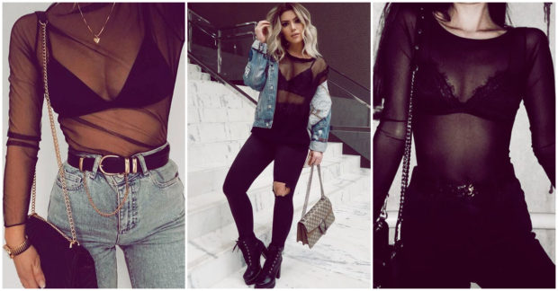
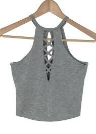
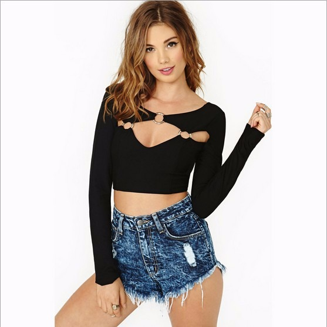
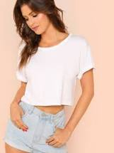

En esta seccion te mostramos las mejor blusas que todos esta usando tu tambien usalas no te quedes con las ganas y te desimos
aqui cuales son las mejor en esta temporada de calor que seguro vas a amar.

Las blusas transparentes han llegado para quedarse. Piezas que se han convertido en la tendencia estrella de un outfit elegante, combinadas con falda o pantalón, e incluso, las más rompedoras las lucen combinadas debajo de los vestidos.
Las blusas transparentes están de moda. Sí, lo dicen las marcas, las instagramers y los street style. Las blusas y camisas de organza son la tendencia más romántica del otoño, una moda que se alarga hasta la primavera, y que por lo tanto se puede lucir durante todo el año. Los tejidos transparentes de una blusa, invitando el paso de la luz, hacen de cada blusa una prenda muy especial.
TOPS
SIN MANGAS

MANGAS LARGAS

MANGA CORTA

Hoy en dia hay una gran variedad de conjuntos los cuales no debes dejar pasar desde conjuntos
deportivos hasta elegantes. a todas nos gusta estar en tendencia de las nuevas noticias hacerca de
ropa que te aseguro que estas anciosa por conocer.
Pues haora te mostraremos lo que esta circulando por las redes hay conjuntos de deportivos si deportivos,
que te haran lucir fenomenal como te mostramos a continuacion.